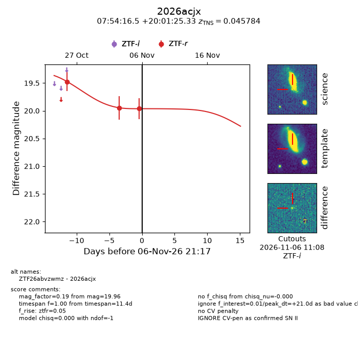
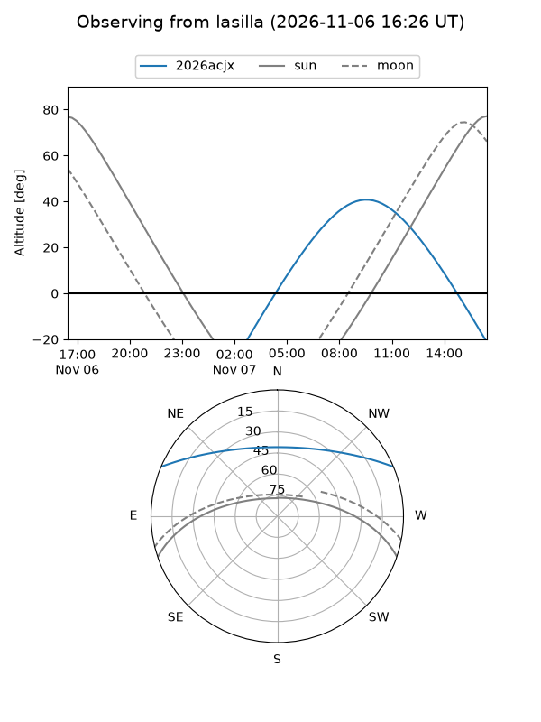
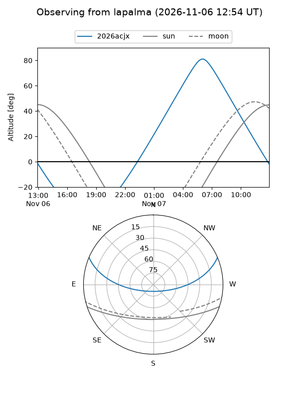
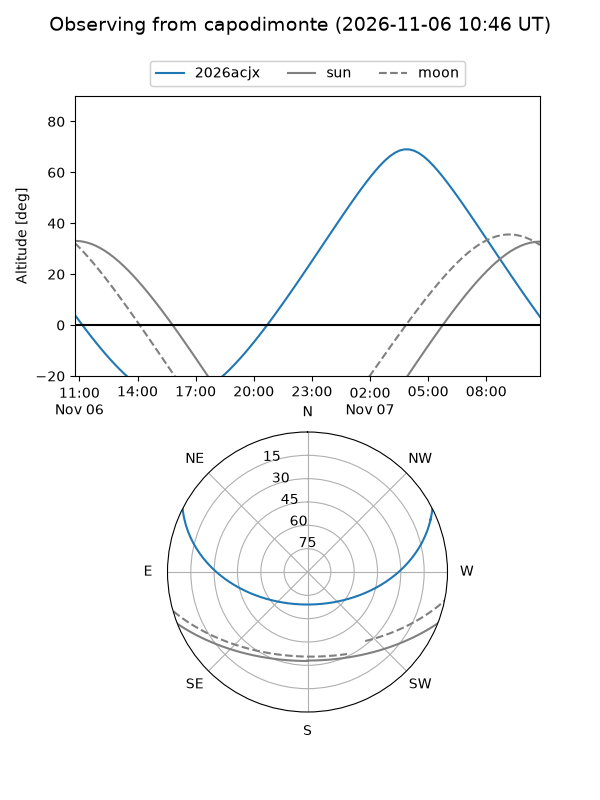
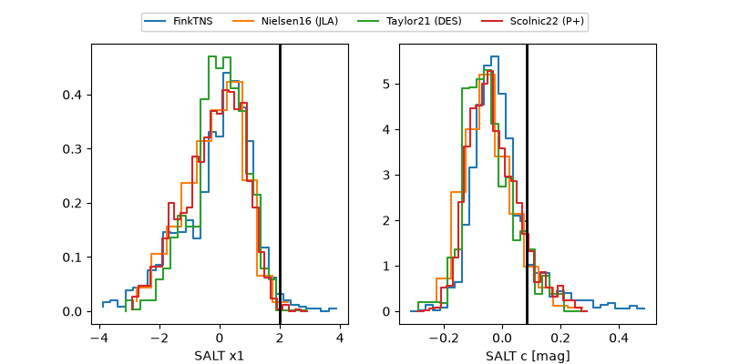

2026acjx
Target 2026acjx at 2026-11-06 21:19
Aliases and brokers:
FINK-ZTF: ztf.fink-portal.org/ZTF26abvzwmz
Lasair-ZTF: lasair-ztf.lsst.ac.uk/objects/ZTF26abvzwmz
ALeRCE-ZTF: alerce.online/object/ZTF26abvzwmz
YSE-PZ: ziggy.ucolick.org/yse/transient_detail/2026acjx
TNS name: wis-tns.org/object/2026acjx
Direct TNS query: direct search
alt names
ZTF26abvzwmz (ztf,fink_ztf)
2026acjx (tns,yse)
Coordinates:
equatorial (ra, dec) = 118.5687,+20.02370
equatorial (HMS+DMS) = 07:54:16.49,+20:01:25.33
galactic (l, b) = (201.1446,+22.49083)
Flags:
TNS type: SN II
TNS redshift: 0.0458
peak dt: +21.0
Photometry:
last ztfr=19.96
3 ztfr detections
Lightcurve

Visibility



Additional plots
